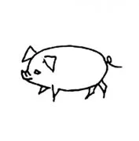

paragraph, here is a link to Baidu.com
paragraph, different action for browser when click Baidu.com
You can reference the program for more detailed information about this algorithm.
Send me an emial if you are interested about me.
I will show you a picture of my idol.
Ok, I show you an image with hyper link:
This line is emphasized.
This line is bold.
This line is italic style.
Just skip
some
lines
aaa
lines
aaa
lines
understand
haha
houhou
awu
miao
mewow
hi
hello
love
you
forever
hh
interesting
Content in pre tag can maitain the format in HTML source file.
And it is useful to display code:
for i in range(10):
print(i)
| Column 1 | Column 2 | Column 3 and Colum 4 | ||
|---|---|---|---|---|
| Group One | ||||
| Group Two |  | |||
|
|
|